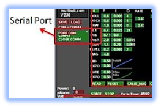

|
SUKKUR IBA UNIVERSITY Merit-Quality-Excellence DEPARTMENT OF ELECTRICAL ENGINEERING |
|
PID Tuning: |
PID tuning is the last and an essential part of this project. PID is basically an acronym for proportional-integral-derivative which is a control loop mechanism mostly used in industrial control systems. As its name implies, it combines proportional control with additional integral and derivative adjustments which helps a system to automatically compensate any changes that occur. As stabilization is very important for any drone because it is inherently unstable due to its six degrees of freedom. So we need to use a mechanism, like PID control, to adjust the moments of the drone. Due to an issue in one of the motors of our designed quadcopter we were unable to perform PID in a proper way, however we understood the PID control mechanism. Here we present the steps on how PID tuning can be done through the GUI interface of the Multiwii platform. |
|
Step 1: |
First of all we need to hang our quadcopter in the air using rubber bands or threads in such a way that it can move in all three-axis so that we can check its pitch,yaw, and roll controls. In our case we used threads and hung it between four sticks. We kept the threads a little loose so that the quadcopter can easily move according to the control signals. |
|
Step 2: |
Second step includes connecting the flight controller with the computer. We connected our flight controller through FTDI cable. One thing important to note here is that before connecting FTDI or any other USB cable with PC, battery from quadcopter should be removed, otherwise it will cause severe damage to PC. |
|
Step 3: |
Next step is to open the config GUI interface and choose the right port through which the flight controller is connected. Once connection is done, ‘select port’ option will turn into green. |
|
 |
|
Step 4: |
After done with connection, we need to first change the P values from GUI. In most of the cases we only change roll, pitch and yaw values from P settings. To change the values we need to click on a label, like roll, and slide the courser to the right or left to increase or decrease the values. At this moment we need to keep other parameters, I and D , at zero. When we kept the value of P very low, the quadcopter started to wobble, so we increased the P values to a point where it seems to be pretty stable. But when we increased the P values too much, the drone started shaking very quickly. By analyzing these moments we found the correct P values for our quadcopter and by pressing the write button, which is located at the bottom left of PID settings, we uploaded new PID values to our flight controller. |
|
Step 5: |
Next is to change I parameters. For this we need to keep I peramenters at a certain value and then apply an external force. If I values are correct, the drone will try to compensate for any change and try to recover its position. In our case we kept P parameter values greater than I parameter values so that P gain should be a little greater than I gain. If values are not set according to this condition, then the quadcopter overcorrects the angle and rather than being stable horizontally, it moves a little to the right side or left while recovering to its original position. After finding correct values we again pressed write button to save the new PID values. |
|
Step 6: |
Last step is to change D parameters. D settings are important if we want to make a quadcopter that performs complex maneuvers like very quick turns to left or right. If we can not adjust D parameters correctly than, while taking turns, our quadcopter will shake rather than being solid. For this we constantly monitored the behaviour of the quadcopter and adjusted D parameters. After this we again press the write button to save the new PID values. |
Here is a video on how to change PID values from config GUI and how to load updated PID values on flight controller. |
| Prev | Next |